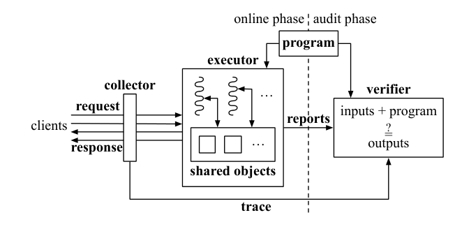
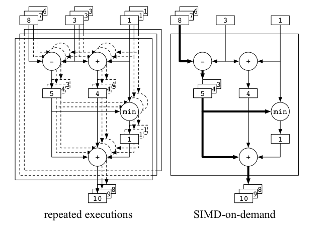
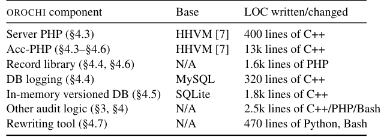
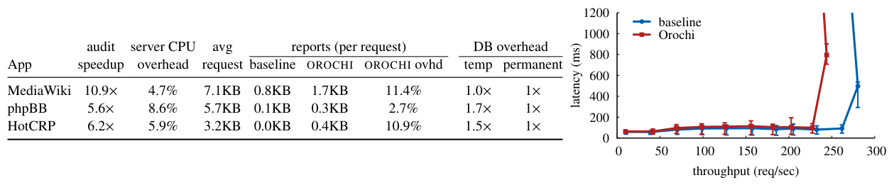
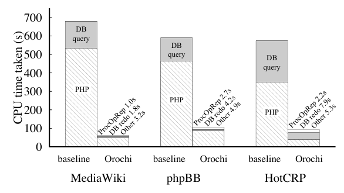
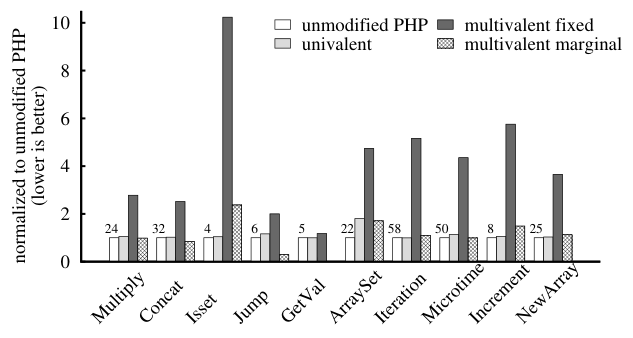
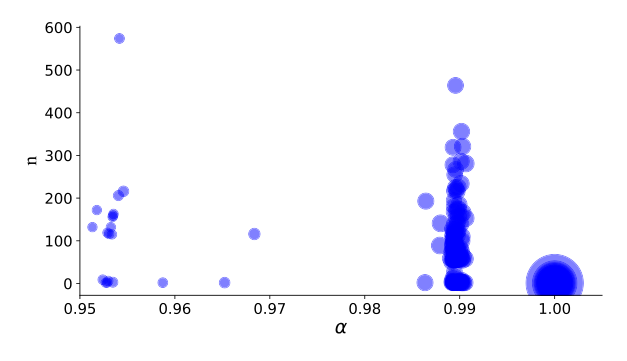

The Efficient Server Audit Problem, Deduplicated Re-execution, and the Web
This page was written by an AI model to give a high-level overview of the paper. Please check the paper for detail: ACM Digital Library.
Dana runs a PHP-and-SQL web application (a wiki, a bug tracker) that is critical to her company, but wants to outsource it to a cloud provider she does not trust. Misconfiguration, a compromised hypervisor, or adversarial control anywhere in the stack could silently corrupt execution, and she would have no way to know. She can place a middlebox at her network border to record every request and response, but that only gives her a trace, not a guarantee. The paper formalizes Dana's situation as the Efficient Server Audit Problem: a principal gives a program to an untrusted, concurrent executor; a trusted collector later hands the principal an accurate trace of requests and delivered responses; the executor also supplies untrusted "reports" meant to help an audit; and a verifier must use the trace and reports to decide, using much less work than simply re-running every request, whether the responses are consistent with having actually executed the program.
Existing execution-integrity techniques do not combine the three properties this problem needs together. Byzantine replication needs no verification algorithm at all, but assumes an honest supermajority of replicas, which Dana cannot buy from a single cloud account. Attestation (TPM-based, or SGX enclaves) can prove which software ran, but not that the (possibly vulnerable) stack behaved, and rigorously showing that in-enclave checks catch every way out-of-enclave code could misbehave is hard. Theoretical verifiable computation and probabilistic proofs make no assumptions about the executor at all, but they represent programs as static circuits with severely bounded state operations, and in practice they cost at least six orders of magnitude more than the computation itself , nowhere near legacy web-application scale. None of this body of work handles a concurrently scheduled executor. And literal re-execution, while correct, costs as much as just running the application again, defeating the point of outsourcing.
The paper's solution, SSCO, gets its efficiency from accelerated, deduplicated replay rather than cryptography, and is built from three techniques. SIMD-on-demand execution batches together the re-execution of requests that share control flow into one "superposed" execution. Simulate-and-check lets the verifier re-execute operations on shared, persistent objects (databases, key-value stores, session state) out of their original order, by simulating reads from the executor's untrusted per-object operation logs and opportunistically checking writes against them. Consistent ordering verification is what makes the first two techniques sound despite untrusted reports: it checks that every alleged operation and every observed request arrival or response departure can be arranged into one schedule consistent with real time and program order, by building a graph of these events and rejecting if it has a cycle.
Concretely, the verifier re-executes each group of requests sharing a control-flow tag together: instructions whose operands agree across the group execute once ("univalently"), instructions that differ execute per request and are merged ("multivalently"), and the moment a multivalent result collapses back to one value across the whole group, the superposed execution deduplicates it. When the superposed execution needs to read a shared object, the verifier does not replay operations in their original order , concurrency means it structurally cannot , so it instead finds the relevant prior write in the executor's claimed operation log and feeds that value in, while opportunistically checking that re-executed writes match the log. Because both the trace and the logs are untrusted and could be fabricated to agree with each other, the verifier separately builds a directed graph over every claimed operation and every request's arrival/departure, with edges from program order, adjacent log entries, and a newly efficient streaming algorithm for real-time precedence, and rejects outright if that graph has a cycle. Only if the graph is acyclic and the re-executed outputs match every response in the trace does the verifier accept.
The authors build OROCHI, an SSCO instantiation for PHP web applications on a modified version of Facebook's HHVM runtime, with a versioned-database backend for SQL objects. Across MediaWiki, phpBB, and HotCRP, OROCHI's verifier audits 5.6–10.9× faster (in CPU time) than a baseline that is deliberately pessimistic toward OROCHI (ordinary serving cost, assumed zero server overhead), while adding under 10% CPU overhead to the production server, and reports average 3%–11% of the size of the request-response trace they accompany.

Key takeaways
- The Efficient Server Audit Problem formalizes auditing an untrusted, concurrent server from a trace plus untrusted reports; it requires Completeness, Soundness, and Efficiency simultaneously , a combination no prior execution-integrity line of work handled together.
- SSCO solves it with three techniques: SIMD-on-demand batched re-execution, simulate-and-check for shared objects, and consistent ordering verification against an acyclic event graph.
- A new streaming algorithm builds the needed time-precedence graph in O(X + Z) time (X requests, Z precedence edges), improving on a prior O(X log X + Z) offline algorithm.
- OROCHI instantiates SSCO for PHP/LAMP applications via acc-PHP (a multivalue-aware HHVM) plus an audit-time versioned database with read-query deduplication.
- Measured on three real PHP applications: 5.6–10.9× CPU speedup over a pessimistic baseline, under 10% server CPU overhead, and 3%–11% report-size overhead; the verifier must also keep a full copy of the application's persistent state.
From the problem definition to a working PHP auditor
The actors and guarantees, the three SSCO techniques in dependency order, and how OROCHI realizes them for PHP/LAMP applications.
1 · The actors and what must hold
A principal deploys a program on an untrusted executor (the "server"), which handles requests from clients, possibly concurrently. A collector, assumed accurate, captures a trace: the ordered requests and the (possibly wrong) responses actually delivered. The executor also maintains reports, meant to assist an audit, but these are untrusted and can be spurious. Periodically, a verifier is given the trace and the reports and must decide whether the responses are consistent with having run the program.
The verifier first checks that the trace is balanced: every response is tied to an earlier request, every request has a response or an explanation for its absence, and every request-response pair carries a unique requestID. Only then does the core audit begin.
2 · Why this is hard: concurrency and shared state
The executor may assign each request to its own thread, which runs until its response is delivered and may issue blocking operations on shared objects (databases, key-value stores, memory cells) that expose atomic (register-like) semantics. Given only the trace's ordering and contents of requests, the number of valid response combinations can be immense, because responses depend on the objects' contents, which depend on the executor's internal scheduling choices.
The verifier and reports must together satisfy:
- Completeness. If the executor actually ran the program under the assumed concurrency model, the verifier must accept.
- Soundness. The verifier may accept only if some schedule S exists such that running the program on the trace's inputs while following S reproduces exactly the trace's outputs, and S is consistent with the trace's observed ordering.
- Efficiency. The verifier must use only a small fraction of the resources of re-execution, the executor's added overhead must be small, and the approach must scale to real applications.
3 · SIMD-on-demand execution
For each group of requests sharing an opaque control-flow tag, the verifier conducts one superposed execution. An instruction with identical operands across the group's logical executions runs once, univalently; an instruction whose operands differ runs multivalently, once per request, merged into a vector result. If a multivalent result's components turn out identical, it collapses back to a univalue, deduplicating subsequent work.

This is efficient when (1) the workload induces far fewer control-flow paths than there are requests, (2) most instructions in a group end up univalent, and (3) switching between modes is cheap. Section 3.1 of the paper gives a worked arithmetic example, and Section 9 below shows that for PHP applications, condition (2) holds to a striking degree. SIMD-on-demand alone, however, says nothing about shared objects , the technique assumes for now that requests don't touch them.
4 · The shared-object problem
Because re-execution does not follow the original schedule, the verifier cannot physically re-invoke operations on shared objects in their original order. A natural idea, borrowed from prior (trusted-recorder) replay systems, is to record the values each request read and supply them back during replay. In an untrusted-report setting this is dangerous: a misbehaving executor could fabricate both a response and a matching "read value" so that re-execution dutifully reproduces a spurious response , a Soundness violation, not merely a self-incriminating failure to match.
5 · Simulate-and-check
Instead, SSCO's reports include an ordered operation log OLi per object i, recording each operation's requestID, a per-request operation number (opnum), its type (read or write), and its contents. An operation is thus uniquely identified by (requestID, opnum), and an index, OpMap, maps each such pair to its claimed position in a log.
- When re-execution performs operation (rid, opnum), the verifier looks it up in OpMap, confirms it targets the one log that should hold it, and checks that the generated operands match the log entry's contents.
- For a read, the verifier does not trust a "read value" field at all; it walks backward through the log from the current position to find the nearest write, and feeds that write's value into re-execution (SimOp).
- For a write, the verifier opportunistically checks the re-executed write's contents against the log (CheckOp) , a check whose validity is retroactively contingent on every earlier write in the chain also checking out.
Per-request operation counts (M) further constrain what a valid log can contain, closing off attempts to pad logs with extra operations.
6 · Why simulate-and-check alone is not enough
Simulate-and-check by itself accepts logs and responses that are mutually consistent fabrications. The paper walks through three two-request examples to show this and to motivate the next technique.
| Example | Setup | Correct verdict | Why |
|---|---|---|---|
| a | r1's response is delivered before r2 arrives (sequential) | Reject | Only output (0,1) is consistent with that ordering; the executor delivered (1,0) |
| b | r1, r2 concurrent | Reject | No schedule of the two writes-then-reads produces the delivered (0,0) |
| c | r1, r2 concurrent | Accept | Delivered (1,1) is reachable by running both writes before either read |
Three strawman fixes all fail: forcing a single global order consistent with real time wrongly rejects c (it would force requests to execute atomically); allowing only a partial real-time order, with logs free to interleave, wrongly accepts b; and only checking the alleged operations for cycles (ignoring real time) wrongly accepts a. SSCO's consistent ordering verification combines all three ideas.
7 · Consistent ordering verification
Before re-executing, the verifier builds a directed graph G with one node per claimed operation (rid, opnum) and, per request, a node (rid, 0) for arrival and (rid, ∞) for departure. Edges come from three sources: program order (opnum − 1 → opnum within a request), adjacent entries in each object's log (state edges), and real-time precedence between requests. If G has no cycle, every event can be consistently ordered, and that implied schedule is exactly what makes simulate-and-check sound.
Real-time precedence (r1 <Tr r2, meaning r1's response departed before r2 arrived) is the piece missing from the three failed strawmen. The verifier must add edges so that a directed path from (r1, ∞) to (r2, 0) exists if and only if r1 <Tr r2. Prior work solved this offline in O(X log X + Z) time (X requests, Z edges); the paper's streaming algorithm does it in O(X + Z), by tracking a "frontier" of the latest mutually concurrent requests , every new arrival descends from the whole frontier, and a departing request evicts its parents from it.
8 · The full audit: tying it together
The audit runs in two phases. First, ProcessOpReports builds G (from the time-precedence graph, program-order edges, and state edges derived from the logs) and rejects if it has a cycle, also constructing OpMap as a byproduct. Second, ReExec performs SIMD-on-demand re-execution of each control-flow group, using CheckOp/SimOp for every shared-object operation, rejecting if execution within a group diverges, if a request finishes with fewer operations than its claimed count M, or if the finally produced outputs do not exactly match the trace's responses. Results beyond this mechanism , the measured speedups and overheads from running this audit on real PHP applications , are covered in the Evaluation tab.
9 · OROCHI: SIMD-on-demand for PHP
OROCHI's verifier runs a modified HHVM, called acc-PHP, that extends PHP's primitive, container, and reference types with multivalue versions. Instructions with univalue operands execute normally; instructions with mixed multivalue/univalue operands trigger scalar expansion (as in Matlab); instructions whose multivalue results turn out identical across the group collapse back to a univalue, which is what actually produces deduplication. Built-in C/C++ functions (of which PHP has thousands) are not individually rewritten; instead, when a built-in's arguments include a multivalue, acc-PHP splits it, deep-copies any referenced objects, invokes the function once per value, and reassembles the results as a multivalue. Known limitations: acc-PHP retries by separately re-executing requests when it meets unsupported mixed types or self-referential multivalue objects, and caps control-flow groups at 3,000 requests to bound memory use.
10 · OROCHI's shared objects and implementation
OROCHI supports three object types matching SSCO's required semantics: atomic registers (PHP session data keyed by cookie), linearizable key-value stores (e.g., the Alternative PHP Cache), and SQL databases. Databases require two restrictions: strict serializability (configurable in most DBMSes, at some concurrency cost versus a weaker default isolation level) and no object operations nested inside multi-statement transactions.
Re-executing a database "read" by walking backward through its whole log, as with registers, would be too slow. Instead, at the start of an audit the verifier performs a versioned redo pass over the log into a versioned database, issuing each write at a version equal to its log sequence number and answering each read query at the version of its log position. An optimization, read-query deduplication, skips re-issuing a SELECT if a lexically identical SELECT already ran and the tables it touches were not modified in between , clustered and sorted by version within each control-flow group. To keep the redo pass fast, writes first land in an in-memory versioned database buffering a disk-backed one; at the end, the buffer's final table state is migrated with a small number of SQL statements.
A fourth report type carries non-deterministic PHP built-in results (time, process id, etc.); the verifier sanity-checks these (e.g., time must be monotonic) but cannot give the same rigorous guarantee for them as for SSCO's core mechanism. Figure 7 depicts the resulting components.

Evaluation
What OROCHI costs the server and saves the verifier, where the savings come from, and what the experiments do not cover.
The testbed is two machines connected by a switch; one alternates between serving (Nginx 1.4.6 fronting the HHVM-based server) and verifying, the other generates load. CPU is measured via Linux's /proc; throughput and latency are measured at the client. Because no prior system solves the same problem at this scale, the paper compares against a deliberately pessimistic baseline: the legacy (non-OROCHI) application's own CPU cost, treated as a lower bound for hypothetical simple re-execution, with the baseline conservatively charged zero server overhead.
| What | Value in the paper |
|---|---|
| Platform | Two machines, each a 3.3 GHz Intel i5-6600 (4-core), 16 GB RAM, 250 GB SSD, Ubuntu 14.04; server runs Nginx 1.4.6 with HHVM/acc-PHP |
| Workloads | MediaWiki: 20,000 requests to 200 pages, Zipf β = 0.53, downsampled from a 2007 Wikipedia trace. phpBB: 30,000 requests from a real CentOS forum thread (63 posts, 83 synthetic users, assumed 1:40 registered:guest ratio). HotCRP: 52,000 requests modeled on SIGCOMM 2009 data (269 papers, 58 reviewers, 820 reviews) |
| Baseline | The legacy (non-OROCHI) application's CPU cost, as a pessimistic stand-in for simple re-execution; zero assumed server overhead for the baseline |
| Metrics | Audit-time CPU speedup, server CPU overhead, report size per request, DB storage overhead, request latency and throughput |
OROCHI audits 5.6–10.9× faster than the baseline, for under 10% server overhead

What it shows. The left table reports, per application: audit speedup (ratio of baseline to OROCHI audit-time CPU cost), server CPU overhead, average request size, report size for the baseline's non-deterministic advice versus OROCHI's reports, OROCHI's report overhead as a fraction of the trace, and OROCHI's temporary/permanent database storage overhead versus a non-versioned DB. Values: MediaWiki 10.9× speedup, 4.7% server overhead, 11.4% report overhead, 1.0× temporary/1× permanent DB overhead; phpBB 5.6×, 8.6%, 2.7%, 1.7×/1×; HotCRP 6.2×, 5.9%, 10.9%, 1.5×/1×. The right graph plots 90th-percentile (with 50th/99th-percentile bars) latency against throughput for phpBB under Poisson-arriving load, comparing baseline and OROCHI service; throughput reductions versus the baseline are 13.0% (phpBB), 11.1% (MediaWiki), and 17.8% (HotCRP), which include the cost of OROCHI's required strict-serializability DB setting versus the baseline's weaker default isolation level.
What to take from it. The audit itself is substantially cheaper than even this pessimistic baseline, while the live server pays a modest, single-digit-to-low-double-digit percentage CPU cost and a throughput reduction in the 11%–18% range. Report sizes track the frequency of object operations and non-deterministic calls and remain a small fraction (roughly 3%–11%, per the paper's abstract) of the trace they accompany. The authors are explicit that the baseline is pessimistic in OROCHI's favor , a real simple-re-execution or full-system-replay baseline would likely cost and report more than this comparison assumes.
Query deduplication, not raw re-execution speed, drives most of the database-side savings

What it shows. For each application, audit-time CPU cost is decomposed into "ProcOpRep" (building and checking the ordering graph, Figures 5–6), "DB redo" (reconstructing the versioned database, Section 4.5), and "Other" (input setup, output comparison, etc.) for the baseline, versus "PHP" (SIMD-on-demand execution plus simulate-and-check) and "DB query" time for OROCHI. The chart's annotations give ProcOpRep, DB redo, and Other costs in the 1.0–2.7s, 1.8–7.9s, and 3.2–5.3s ranges respectively across the three applications.
What to take from it. Without read-query deduplication (Section 4.5), every database operation in the log would have to be reissued during re-execution; the paper reports that deduplication is most effective on read-dominated workloads, as in MediaWiki. This result locates where OROCHI's savings actually come from on the database side, complementing the PHP-execution analysis in Results 3 and 4.
Multivalent execution is, per instruction, often slower than the baseline , the savings come from collapsing to univalent

What it shows. A microbenchmark runs 107 invocations of a representative instruction from each of 10 PHP byte-code categories (Multiply, Concat, Isset, Jump, GetVal, ArraySet, Iteration, Microtime, Increment, NewArray), measured under unmodified PHP, acc-PHP univalent execution, and acc-PHP multivalent execution split into fixed cost (maintaining a multivalue with zero requests) and marginal cost (per additional request). Times are normalized clusterwise to unmodified PHP, whose absolute per-instruction times (µs) are 24, 32, 4, 6, 5, 22, 58, 50, 8, and 25 respectively.
What to take from it. Multivalent execution's fixed cost is high, and its marginal cost is sometimes worse than simply running the instruction once per request , multivalent execution, in isolation, is not where the speedup comes from. The paper's explanation, confirmed by Result 4, is that most requests share control flow and, within a shared control-flow group, the large majority of instructions execute univalently; the gain is from the "on-demand" collapsing of multivalues back to univalues, not from "SIMD" parallelism per se.
MediaWiki's control-flow groups are large and almost entirely univalent

What it shows. Each bubble is one control-flow group in the MediaWiki workload, plotted by its number of requests (n) and proportion of univalent instructions (α), with bubble size proportional to instruction count (ℓ). The workload has 527 total groups (237 with n > 1) over 200 unique URLs; every group has α > 0.95.
What to take from it. This directly confirms the hypothesis behind Result 3: many groups batch large numbers of requests, and within each, the overwhelming majority of instructions end up univalent and therefore deduplicated. The paper also notes a slight negative correlation between group size (n) and univalent proportion (α) within a workload, which it flags as not ideal for OROCHI , larger groups give a little more multivalent work, even though they still dominate on net.
FAQ
Q·What does "SSCO" stand for?▾
The paper calls it "a rough abbreviation of the key techniques": simultaneous replay (SIMD-on-demand), simulate-and-check, and consistent ordering verification.
Q·How is this different from Byzantine fault tolerance?▾
Byzantine replication needs no verification algorithm, but it assumes an honest supermajority among multiple independent replicas executing the same requests. SSCO assumes nothing about how many copies of the executor exist or whether any of them is honest; it instead verifies a single untrusted executor's claimed behavior after the fact, from a trace and the executor's own (untrusted) reports.
Q·How does this compare to SGX/attestation-based approaches?▾
Attestation (TPM-based, or SGX enclaves) proves which software is running, but a vulnerable or compromised layer below or around that software can still corrupt execution. Enclave-based systems that check untrusted outside code against the enclave's expectations exist, but the paper notes it is hard to rigorously establish that such checks catch every possible deviation. SSCO instead makes no assumptions about the executor's internals at all; it only needs an accurate trace from a trusted collector.
Q·Why can't the verifier just trust the executor's claimed read values during replay?▾
Because the reports are untrusted, a misbehaving executor could fabricate a response and a matching "this is what I read" value together, so that re-execution would dutifully reproduce and thereby validate a spurious response. That would violate Soundness. Simulate-and-check instead derives read values from the same logs it separately, opportunistically checks against re-executed writes, and consistent ordering verification further constrains which logs are even admissible.
Q·Why not just give the verifier an explicit thread schedule to replay?▾
If the schedule itself is untrusted, an adversarial executor can supply a schedule inconsistent with any valid execution, correlated with bogus outputs, to make the replayer validate an illegal execution , a Soundness failure. If instead the replayer must search for a schedule itself from sparse hints, an adversarial executor can make that search run arbitrarily long, forcing the verifier to give up and reject valid executions , a Completeness failure. The paper discusses this exact tension in its conclusion as the reason the problem was harder than expected.
Q·Why does the verifier need real-time edges in addition to program order and log order?▾
The paper shows with worked examples (Section 3.4) that checking only program order and log order for cycles wrongly accepts a trace where a response was delivered before the request that must have produced its matching value even arrived. Adding real-time precedence edges, derived from when responses departed and the next requests arrived, rules this out, while still allowing operations from genuinely concurrent requests to interleave freely in the logs.
Q·If multivalent execution is sometimes slower per instruction, why does SIMD-on-demand help at all?▾
The speedup does not come from vector-style parallelism across requests; the paper's microbenchmark shows multivalent execution can cost more than running an instruction once per request. It comes from the "on-demand" part: whenever a multivalent result's components turn out identical across the group, it collapses to a univalue and all later computation on it runs once. Because most instructions in a shared control-flow group are univalent in the authors' workloads, this collapsing eliminates the great majority of redundant work.
Q·Does OROCHI give the full SSCO guarantees in practice?▾
Not quite. SSCO's idealized Soundness assumes no leeway for non-determinism, but OROCHI must handle non-deterministic PHP built-ins (time, process id, database auto-increment IDs) with sanity checks rather than full verification, so a sufficiently careful executor retains some room to misbehave through these channels. Likewise, if the verifier's and server's software stacks differ in observable ways, OROCHI can fall short of idealized Completeness by wrongly rejecting a well-behaved server.
Q·Does the server have to be single-threaded or otherwise restricted?▾
No , SSCO's concurrency model explicitly allows one thread per in-flight request, running concurrently with other requests whose responses have not yet been delivered. OROCHI's compatibility restrictions are different: applications must not nest other object operations inside multi-statement database transactions, must configure the database for strict serializability, and (in the current implementation) should not interact heavily with other external services.
Q·Could this work for languages other than PHP?▾
The authors present SSCO as a general theoretical solution and OROCHI as one instantiation, chosen for illustration; they state they expect both the system design and the underlying techniques to generalize to other web languages and contexts, and list this as explicit future work, rather than something the paper demonstrates.
Q·How does OROCHI handle SQL databases if it has to re-execute requests out of order?▾
At the start of an audit, the verifier performs a versioned redo pass: it issues every logged transaction to a versioned database, tagging each with the log's sequence number as its version. During re-execution, a read query is answered at the version matching its position in the log, rather than by walking the log directly, and lexically identical read queries that span unmodified data are deduplicated across a sorted cluster rather than reissued.
Q·What are the main limitations the authors acknowledge?▾
The executor retains scheduling discretion over concurrent requests and over non-deterministic PHP built-in return values; OROCHI is restricted to applications with limited interaction with other external services; some applications need minor source modifications to fit SSCO's object model; and the principal can only audit activity after OROCHI is deployed, requiring a trusted bootstrap of pre-deployment state otherwise.
Q·Who collects the trace, and does the verifier have to trust them?▾
Yes , the collector is assumed accurate. In practice this might be a middlebox the principal controls at the network edge (as in Dana's scenario) or, where the principal does not control the server's network path, an attested enclave running a trace collector and TLS proxy. The paper treats accurate trace collection as a prerequisite, separate from the audit problem it solves.